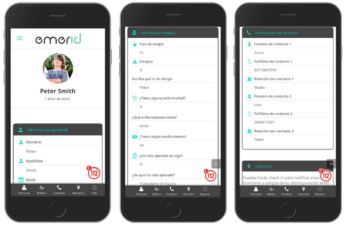
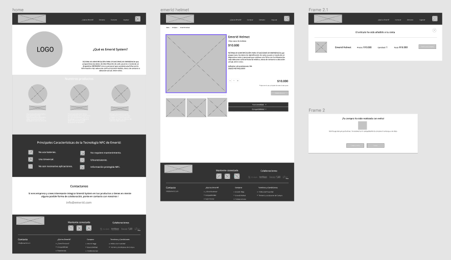
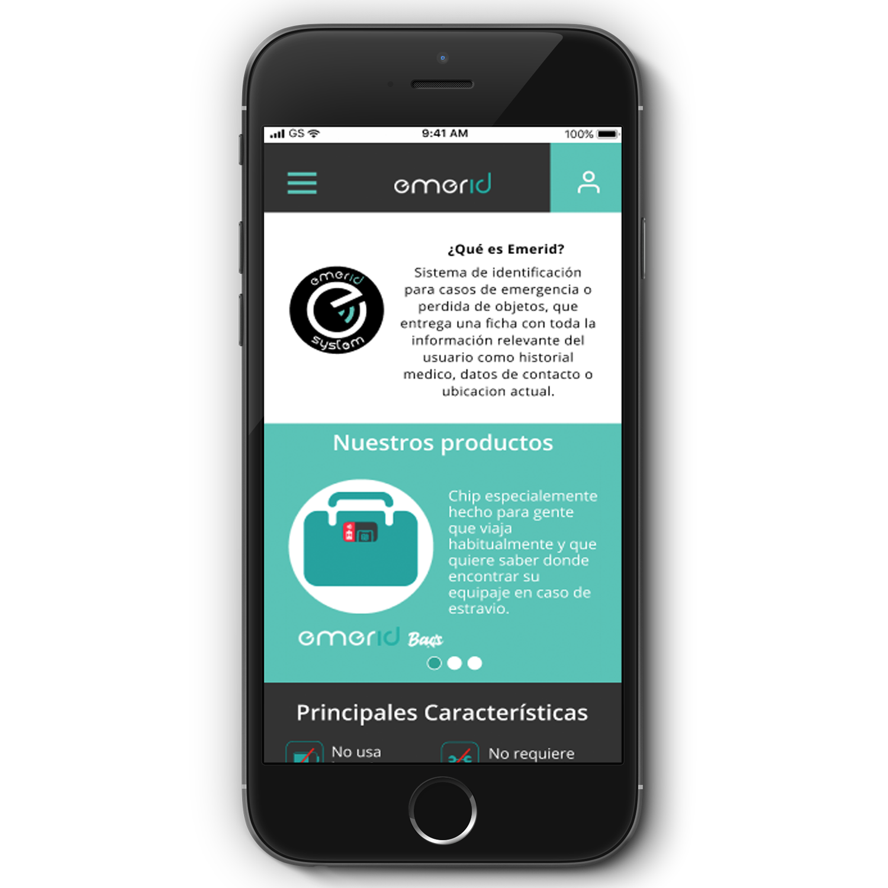
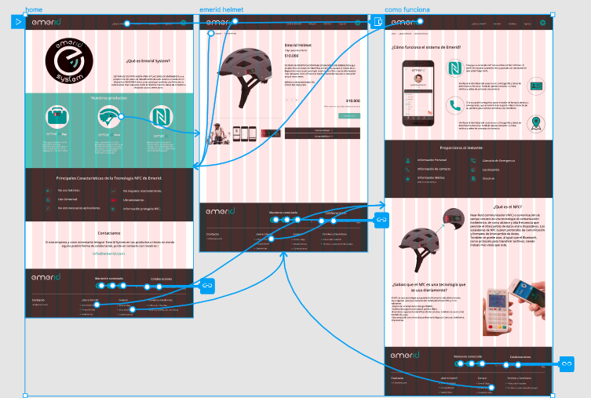

Emerid
Julio/2019
Webpage
Proyecto: Magical startups
Equipo :Fernanda, Carolina y María José
Función :UX/UI
Re-serch, User Persona, testeos, guía de estilos, prototipado.
Empresa
Emerid System, es una start up con operaciones en España, Francia, Portugal y Chile. El producto que comercializan es un Sistema de Identificación Contactless que consiste en un pequeño dispositivo NFC sin baterías que transmite información clave en el momento preciso a un Smartphone. El cliente en un comienzo enfoco su negocio en B2B vendiendo sus chips para implementarlos en trajes de neopreno.
Ahora se dieron cuenta que ellos podian comercializar directamente el producto, y surgió la idea de crear “Emerid Helmet”, dispositivo creado para ciclistas que al tener un accidente podían ser identificados y “Emerid Bags” que es útil en el caso de extraviar equipaje.
Problema
El desafío consistía en enfocar el negocio de B2B a B2C,venta directa a usuarios, dar a conocer la nueva línea de productos “Emerid Helmet” y “Emerid Bags”, y hacer tecnología NFC a los usuarios.
Solución
Crear una plataforma web para que los usuarios puedan acceder a toda la información de Emerid, conocer sus productos, enseñar como usar la tecnología NFC y mostrar que es una tecnología que se usa día a día pero los usuarios aun no saben reconocerla.

Proceso de Diseño
Nos guiamos por el método Design Thinking, para poder enfocarnos en el usuario. El objetivo es que de una forma ordenada poder encontrar las soluciones necesarios para el problema.
Empatizando
Lo primero fue poder entender el problema del cliente y luego conocer e identificar los usuarios y conocer mas sobre la tecnología NFC. Y además de esto poder conocer el contexto en que estaba situada la marca.
Para esto se realizó una entrevista con el cliente, investigación de la marca en redes, entrevistas con usuarios y análisis de Benchmark.
Aprendizajes de esta etapa:
- Los usuarios en Chile aún no identifican la tecnología NFC, por lo tanto les cuesta interactuar con el dispositivo.
- A pesar de no saber cómo interactuar con el dispositivo, sienten interés inmediato una vez que se les explica el funcionamiento y sus beneficios.
- La página web no está pensada para el usuario final.
- Los iconos que componen el producto no permiten que los usuarios sepan qué hacer.
- Existen tres tipos de usuarios distintos para los chip:
1.- Usuario que se moviliza en bicicleta, motocicleta, scooter frecuentemente y busca en el dispositivo seguridad al momento de tener un accidente.
2.- Usuario que necesita el dispositivo para identificar sus mochilas o maletas, que viaja con frecuencia por ende puede sufrir la pérdida de sus pertenencias.
3.- Identificamos este ultimo usuario que es aquel que encuentra a la persona que sufrió un accidente o que pierde su maleta y debe entender el chip para poder proporcionar ayuda.
Definiendo
Luego de la investigación y análisis se desarrollo de dos “User Persona” y un Journey Map para identificar los dolores y necesidades de los usuarios.
Aprendizajes:
- Los usuarios usan la tecnología pero no sabe que la está usando.
- Los usuarios buscan sentirse seguros.
- Los usuarios están interesados en conocer nuevas tecnologías.

Ideando
Después del proceso de definición y de empatización se pudo pasar al proceso de ideación, donde se juntaron todas las ideas de los anteriores procesos.
Ordenamos toda la información recopilada, la agrupamos en post it para reconocer aprendizajes generales y poder reconocer insights y how might we?
Principales Ideas
- Enfocar la pagina principal en el chip.
- Pestaña de empresas con información relevante de contacto más las experiencia con las empresas con las que trabajan actualmente.
- Beneficios del Chip
- Experiencias atractivas con personas reales.
- Entregar la compatibilidad de los Smart phone en la página web.
Luego de esto nos pudimos enfocar en las principales problemáticas y desarrollar la siguiente etapa.

Prototipando y Evaluando
Prototipo de Baja
Estos procesos se hicieron de forma conjunta para poder interactuar mejor con el usuario.
Luego de realizar un Card sorting y Site Map, se realizaron sketchs, con los cuales pudimos llegar a un prototipo de baja calidad.
Este prototipo de baja calidad, se realizo previamente al de alta fidelidad para poder realizar de forma rápida las iteraciones.
Prototipo de Alta
Como parte de la propuesta de mejoras EMERID, desarrollamos un prototipo de alta fidelidad con la herramienta Figma , que servirá para mejorar la experiencia de los usuarios con la página web, desarrollando el flujo de información de la página y la rapidez de la compra de los nuevos productos, sin perder el enfoque de mantener la conexión de EMERID con las empresas que deseen colaborar con ellos.
Luego se testeo este prototipo con 5 usuarios de lo cual se sacaron los siguientes aprendizajes:
- Simplificar el proceso de compra de productos.
- Los colores y fuentes llaman la atención de los usuarios.
- La información es entendible para los usuarios.
- Los usuarios logran realizar la compra de los productos.
Análisis Final
Realizando este proyecto aprendimos a interactuar con usuarios muy diferentes y específicos.
Fue un proceso de investigación muy interesante y uno de los principales aprendizajes fue reconocer el potencial de los productos y saber como mostrar el potencial de estos productos en la web.
